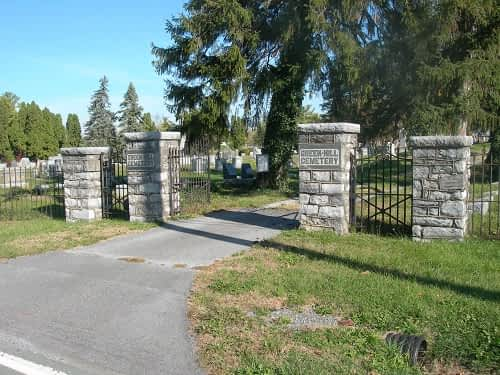

Between Fairfax, Martin, Water, and Grove Streets

In the decade after the Civil War this was the first cemetery established on land that was once the town’s common, a tract originally held in reserve by the town’s proprietor Lewis Stephens. The white population (those of European descent) established this cemetery in the fashion of the time as a non-denominational graveyard in a park-like setting. Funds realized from the sale of grave plots was to be invested so that the cemetery would receive perpetual care. This cemetery includes the graves of several Civil War veterans and townspeople of the nineteenth and twentieth centuries. This cemetery remains in active use. Stone House Foundation benefactress Mildred Lee Grove is buried here along with other members of her extended family.